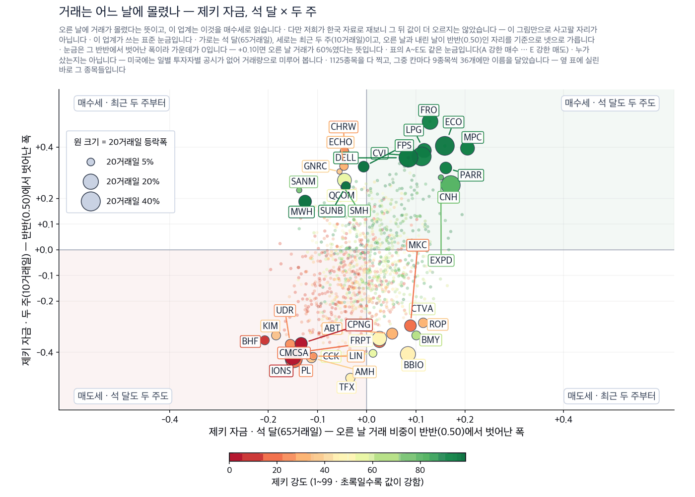
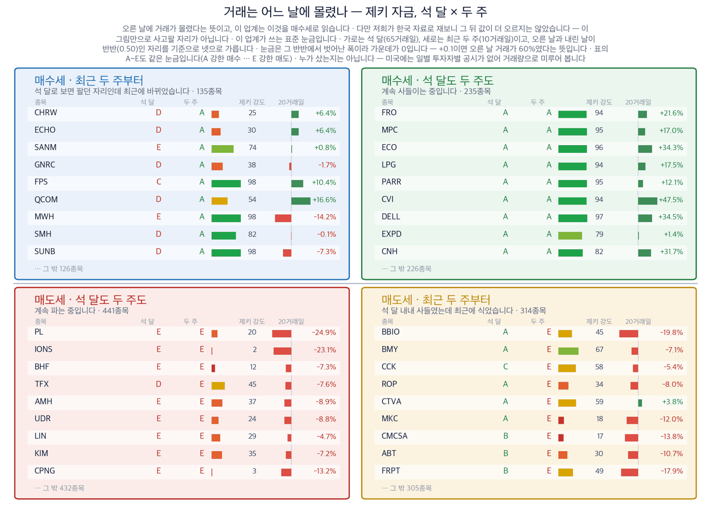

지수는 50일 평균을 되찾았지만, 그 위에 선 종목은 3곳 중 1곳입니다
2026년 9월 18일 · 값은 9월 17일 종가 기준입니다
신문에서 저희가 갖고 있지 않은 회사를 찾아, 왜 값을 할 수 있는지 숫자로 적습니다.
S&P 500 7,638 (+1.14%) | 나스닥 26,418 (+1.69%) | 다우 51,778 (+0.61%) | 미 국채 10년물 4.95% | 제키 신호등 노란불 |

이 그림 읽는 법
| 켜진 등 | 오늘의 국면입니다. 초록은 매수 우위, 노랑은 관망, 빨강은 매수 자제입니다. |
| 채워진 칸 | 7가지 조건 중 몇 개를 통과했는지입니다. 칸이 많이 찰수록 시장 구조가 튼튼합니다. |
| 칸이 다 찼는데 노랑·빨강이면 | 다른 이유로 한 단계 낮춘 것입니다. 그림 아래에 그 이유를 적었습니다. |
제키 신호등은 시장 국면을 7가지로 재서 하나로 줄인 것입니다. 초록불은 매수 우위, 노란불은 관망, 빨간불은 매수 자제입니다. S&P 500과 나스닥은 7가지 가운데 6가지, 러셀 2000은 5가지를 지났습니다.
지금 할 일
실행 요약 — 결론부터 3가지
9월 17일 뉴욕이 되돌렸습니다. S&P 500이 1.14%, 나스닥이 1.69% 올랐습니다. 그런데 저희가 값을 갖고 있는 1,136종목의 가운데 값은 0.28% 오르는 데 그쳤습니다. 지수를 올린 것은 큰 회사 몇 곳입니다.
50일 평균 위에 있는 종목은 385개, 전체의 33.9%입니다. 지수는 그 평균을 되찾았는데 종목 3곳 중 2곳은 아직 아래에 있습니다. 20거래일 동안 오른 종목은 296개로 26.1%이고, 452개는 자기 52주 최고가보다 20% 넘게 낮은 자리에 있습니다.
새벽에 원유가 무너졌습니다. 서부텍사스산 원유는 9월 18일 새벽 95.7달러로 6.11% 내렸습니다. 오늘 아침 지면의 에너지 기사들은 그보다 높은 값을 전제로 쓰였습니다. 값이 먼저 움직였고 기사가 뒤에 도착한 것입니다.
그래서 어떻게 하나: 개장 30분 동안 오른 종목 수가 지수만큼 늘어나는지 보시면 됩니다. 지수만 오르고 종목 수가 따라오지 않으면 어제와 같은 모양입니다.
먼저, 이번 주 경제
이번 주 숫자 하나만 기억하신다면 33.9%입니다. 50일 평균 위에 서 있는 종목의 비율이고, 오른 지수가 얼마나 좁게 올랐는지를 이 하나가 말해 줍니다.
| 날짜 | 무엇을 보는가 | 넘으면 어떻게 되는가 |
|---|---|---|
| 9월 18일 개장 30분 | 서부텍사스산 원유가 95.7달러 아래에 머무는지 | 머물면 에너지·해상운송 이야기의 전제가 약해집니다 |
| 9월 18일 마감 | 50일 평균 위 종목이 385개보다 늘어나는지 | 늘어나면 이번 반등이 지수 몇 곳의 일이 아니게 됩니다 |
| 9월 21일 | 워싱턴 권역에 인공지능 항공 관제 도구가 켜지는지 | 켜지면 공공 부문 인공지능 발주가 실제 매출로 바뀝니다 |
| 9월 30일 | 마이크론 실적 | 메모리 수요가 확인되면 설비 테마가 한 단계 굳어집니다 |
일정은 발표된 것만 적었습니다. (월스트리트저널)
왜 그런가
값과 자금으로 하나씩 확인했습니다
테마 1 · 유가가 아니라 항로에 돈이 붙었습니다
오늘 지면은 사우디아라비아가 원유를 빼낼 다른 길을 찾고 있다고 보도했습니다. 호르무즈 해협을 지나는 소형 선박 연계 수송이 현재로서 가장 현실적인 대안이라는 내용입니다. 같은 지면에 전쟁으로 공급망이 흐트러지면서 원유·석유제품 중개인들이 호황을 맞고 있다는 기사가 함께 실렸습니다. (월스트리트저널)
돈이 향한 곳은 원유 자체가 아닙니다. 같은 물량을 더 먼 길로 나르면 배가 더 오래 묶이고 운임이 오릅니다. 그래서 저희는 정유제품 운반선 회사를 숫자로 확인했습니다.
종가 87.85달러 · 9월 17일 +2.58% · 20거래일 +10.9% · 석 달 +7.5% · 제키 강도 82 · 제키 자금 석 달 B · 두 주 A · 52주 최고가와 같은 자리 누가 정유제품 운반선 선사가 · 무엇을 석유제품을 바다로 나르는 일감을 · 언제 9월 17일 종가까지 · 어디서 호르무즈 해협과 그 우회 항로에서 · 왜 전쟁으로 원래 항로가 막혀 같은 화물이 더 먼 길을 돌기 때문에 · 어떻게 배가 오래 묶이면서 하루 운임이 오르고 매출이 늘어납니다 9월 17일 거래량은 50일 평균의 1.79배였습니다. 주가는 52주 최고가에서 마쳤습니다. 원유가 그날 내렸는데도 이 회사는 올랐습니다. 시장이 값이 아니라 항로를 보고 있다는 뜻입니다. 확인 신호 — 원유가 95.7달러 근처에 머무는데도 주가가 9월 17일 종가 위를 지키는 것. 운임이 원유 값과 따로 움직인다는 증거입니다. 철회 기준 — 87.85달러(9월 17일 종가이자 52주 최고가) 아래로 내려 20거래일 상승분을 되돌리는 것. 그러면 전쟁 프리미엄이 풀린 것으로 봅니다. |
테마 2 · 지면의 기술 기사 3건이 모두 설비 이야기였습니다
오늘 지면의 기술 기사는 모델이 아니라 설비를 다뤘습니다. 데이터센터를 공장에서 찍어 내겠다는 회사가 39억달러를 조달했습니다. 그 회사의 기업가치는 310억달러로 매겨졌습니다.
화웨이는 엔비디아 계산 장비를 대체할 제품 개발에 속도를 내고 있습니다. 세일즈포스는 2030 회계연도 매출로 630억달러를 제시했습니다. 시장이 기대하던 것보다 높은 숫자입니다. (월스트리트저널)
세 기사의 공통점은 인공지능의 병목이 소프트웨어에서 하드웨어로 옮겨 갔다는 것입니다. 그 하드웨어를 파는 회사 가운데 값과 자금이 함께 움직인 2곳이 저희 계산에서 남았습니다.
종가 178.19달러 · 9월 17일 +6.35% · 20거래일 +42.1% · 석 달 +9.1% · 제키 강도 96 · 제키 자금 석 달 A · 두 주 A · 52주 최고가와 같은 자리 누가 아날로그·혼성신호 반도체 회사가 · 무엇을 데이터센터 안에서 신호를 실어 나르는 부품을 · 언제 9월 17일 종가까지 · 어디서 새로 짓는 데이터센터 현장에서 · 왜 서버가 늘면 서버끼리 잇는 부품이 먼저 늘기 때문에 · 어떻게 장비 회사 주문이 늘면 분기 매출로 곧장 들어옵니다 9월 17일 거래량은 50일 평균의 1.59배였습니다. 제키 자금은 석 달이 A, 최근 두 주가 A입니다. 석 달 내내 매수세가 우세했고 최근에도 식지 않았다는 뜻입니다. 확인 신호 — 9월 17일 종가인 178.19달러 위에서 자리를 지키는 것. 13주 동안 다져 온 가격대를 막 벗어난 자리입니다. 철회 기준 — 그 가격대 안으로 되돌아가 20거래일 상승분 42.1%를 절반 넘게 반납하는 것. |
종가 61.04달러 · 9월 17일 +7.69% · 20거래일 +14.9% · 석 달 +24.8% · 제키 강도 96 · 제키 자금 석 달 B · 두 주 A · 52주 최고가 대비 -1.7% 누가 기업용 서버·저장장치 회사가 · 무엇을 인공지능 계산을 돌릴 서버와 저장장치를 · 언제 9월 17일 종가까지 · 어디서 새로 짓는 데이터센터 현장에서 · 왜 데이터센터를 새로 짓는 곳마다 같은 장비를 함께 사기 때문에 · 어떻게 수주가 매출로 바뀌는 데 두 분기쯤 걸립니다 9월 17일 거래량은 50일 평균의 1.25배였습니다. 제키 자금은 석 달이 B, 최근 두 주가 A입니다. 석 달 내내 매수세가 우세했고 최근에도 식지 않았다는 뜻입니다. 확인 신호 — 9월 17일 종가인 61.04달러 위에서 52주 최고가를 새로 쓰는 것. 지금은 그 최고가보다 1.7% 낮습니다. 철회 기준 — 제키 자금의 최근 두 주 등급이 A에서 C 아래로 내려가는 것. 사들이던 거래가 식었다는 뜻입니다. |
테마 3 · 자동차 회사가 미사일 부품을 만듭니다
제너럴모터스가 록히드마틴과 손잡고 패트리엇 요격미사일 부품을 생산합니다. 우크라이나와 중동에서 소모된 미국의 탄약 재고를 채우기 위한 것입니다. 지면은 이 소식을 1면 경제 요약과 기업면에 함께 올렸습니다. (월스트리트저널)
종가 86.62달러 · 9월 17일 +2.76% · 20거래일 +2.0% · 석 달 +9.7% · 제키 강도 68 · 제키 자금 석 달 C · 두 주 B · 52주 최고가 대비 -4.1% 누가 미국 최대 자동차 회사가 · 무엇을 요격미사일에 들어가는 부품을 · 언제 9월 17일 발표로 · 어디서 미국 내 자동차 부품 생산 설비에서 · 왜 전쟁으로 미국의 탄약 재고가 바닥났기 때문에 · 어떻게 비어 있던 생산 능력이 방위 발주로 채워집니다 다만 숫자는 아직 이야기를 따라오지 못했습니다. 제키 강도는 68이고 제키 자금은 석 달 C입니다. 20거래일 상승률도 2.0%에 그칩니다. 계약 규모와 납품 시기가 공개되지 않아 매출로 얼마가 잡히는지 알 수 없습니다. 확인 신호 — 10월 20일 실적 발표에서 방위 부문 수주가 금액으로 제시되는 것. 철회 기준 — 그 자리에서 금액이 나오지 않거나, 제키 강도가 68에서 더 내려가는 것. |
기사는 컸지만 숫자가 따라오지 않아 제외한 곳
기사가 그럴듯해도 값과 자금이 따라오지 않으면 종목으로 만들지 않습니다. 오늘은 3곳이 그랬습니다. 제외
| 종목 | 기사 | 제외 이유 |
|---|---|---|
| 제너랙 (GNRC) 테마 제외 | 아마존 데이터센터에 발전기를 대는 장기 계약을 맺고 9월 17일 18.34% 올라 S&P 500 상승률 1위 | 제키 강도 38이고 52주 최고가보다 29.9% 낮습니다. 추세 지표가 0 아래라 저희 진입 조건에 들지 않습니다 |
| 록히드마틴 (LMT) 테마 제외 | 패트리엇 미사일의 원청으로 제너럴모터스와 협력 | 20거래일 8.7% 내렸고 제키 강도는 42입니다. 추세 지표도 0 아래입니다 |
| 쿠퍼 (COO) 테마 제외 | 행동주의 펀드가 최고경영자 교체를 요구하는 서한을 보냈다는 단독 보도 | 제키 강도 6, 20거래일 29.9% 하락, 제키 자금은 석 달과 두 주 모두 E입니다 |
오늘 찾은 것, 한 장으로
| 테마 | 종목 | 제키 강도 | 근거의 무게 |
|---|---|---|---|
| 유가가 아니라 항로 | 스코피오 탱커스 (STNG) | 82 | 근거 있음 |
| 인공지능 설비 | 셈테크 (SMTC) | 96 | 근거 확실 |
| 인공지능 설비 | 휼렛팩커드 엔터프라이즈 (HPE) | 96 | 근거 확실 |
| 탄약 재고 채우기 | 제너럴모터스 (GM) | 68 | 확인 필요 |
근거의 무게 — 어떻게 그 결론이 나왔는가
| 종목 | ①20거래일 상승 | ②강도 90↑ | ③자금 석 달 A~B | ④두 주 안 꺾임 | 충족 | 근거의 무게 |
|---|---|---|---|---|---|---|
| 스코피오 탱커스 (STNG) | O | X | O | O | 3/4 | 근거 있음 |
| 셈테크 (SMTC) | O | O | O | O | 4/4 | 근거 확실 |
| 휼렛팩커드 엔터프라이즈 (HPE) | O | O | O | O | 4/4 | 근거 확실 |
| 제너럴모터스 (GM) | O | X | X | O | 2/4 | 확인 필요 |
①은 20거래일 동안 올랐는지입니다. ②는 제키 강도가 90 이상인지입니다. ③은 제키 자금 석 달 등급이 A 또는 B인지입니다. ④는 최근 두 주 등급이 석 달보다 낮아지지 않았는지입니다. 충족한 수가 결론을 정하고, 사람이 따로 고르지 않습니다.
찾아낸 종목에 자금이 따라왔는가
기사와 값이 맞아도 거래가 따라왔는지는 따로 봅니다. 미국은 누가 샀는지를 날마다 공시하지 않습니다. 그래서 거래가 오른 날에 몰렸는지로 미루어 봅니다.
| 종목 | 제키 자금 석 달 | 제키 자금 두 주 | 9월 17일 거래량 (50일 평균 대비) | 기준일 |
|---|---|---|---|---|
| 스코피오 탱커스 (STNG) | B | A | 1.79배 | 9월 17일 |
| 셈테크 (SMTC) | A | A | 1.59배 | 9월 17일 |
| 휼렛팩커드 엔터프라이즈 (HPE) | B | A | 1.25배 | 9월 17일 |
| 제너럴모터스 (GM) | C | B | 1.41배 | 9월 17일 |
A가 가장 강한 매수, E가 가장 강한 매도입니다. 4곳 모두 9월 17일 거래량이 50일 평균을 넘었습니다.
거래는 어느 날에 몰렸나

이 그림 읽는 법
| 점 하나 | 종목 하나입니다. 가로·세로 위치가 두 값을 그대로 나타내고, 가운데 가로·세로로 그어진 두 선이 기준선입니다. 네 귀퉁이의 이름표가 그 칸의 뜻입니다. |
| 점 크기 | 최근 20거래일 등락폭입니다. 오르든 내리든 크게 움직였으면 큰 점입니다. |
| 점 색 | 제키 강도입니다. 초록일수록 주가가 시장에서 강합니다. |
| 30종목만 | 이름이 겹치면 못 읽기 때문입니다. 가운데 몰린 나머지는 움직임이 거의 없는 종목들이라 뺐습니다. |

이 그림 읽는 법
| 이 그림이 말하지 않는 것 | 같은 기간의 거래와 등락을 나란히 놓은 것입니다. 앞날을 맞히지는 못합니다 — 저희가 미국 21년치로 재 보니 네 칸의 그 뒤 성적이 서로 구별되지 않았습니다. 가장 높은 등급과 가장 낮은 등급의 차이도 0.03%p로 사실상 없었습니다. 그래서 이 그림은 지금 어디에 있는지를 보는 자리이지 사고팔 자리가 아닙니다. 그리고 누가 샀는지는 알 수 없습니다 — 미국에는 투자자별 일별 공시가 없어 거래량으로 미루어 볼 뿐입니다. |
| 네 칸 | 가로와 세로 두 값이 각각 기준선을 넘었는지로 넷을 가릅니다. 오른쪽 위는 둘 다 넘은 곳, 왼쪽 아래는 둘 다 못 넘은 곳, 나머지 두 칸은 한쪽만 넘은 곳입니다. 칸 이름이 그 칸에 든 종목의 상태를 한 문장으로 적어 둔 것입니다. |
| 가운데 두 칸 | 두 기간을 견주는 자리입니다. 글자 A~E가 있으면 이 업계가 쓰는 표준 등급으로, A는 강한 매수, B는 매수 우세, C는 매수와 매도가 반반, D는 매도 우세, E는 강한 매도를 뜻합니다(전체를 다섯으로 나눈 순위라 A가 상위 20%입니다). 숫자가 있으면 그 기간에 산 양에서 판 양을 뺀 것입니다. |
| 칸마다 9종목 | 그 칸에서 움직임이 가장 큰 순서입니다. 나머지는 칸 아래에 몇 종목인지만 적었습니다. 옆 산점도가 이름을 다는 종목이 바로 이 9종목씩입니다. |
| 20거래일 막대 | 0을 가운데 두고 오른쪽이 상승, 왼쪽이 하락입니다. 길이는 같은 칸 안에서만 서로 견주십시오 — 칸마다 기준이 다릅니다. |
| 제키 강도 | 1~99 순위입니다. 막대가 길수록, 초록에 가까울수록 그 종목의 주가가 시장에서 강합니다. |
실린 종목은 어떻게 됐나
09/09부터 쌓은 누계입니다. 지금까지 38종목을 실었고, 그중 5거래일이 찬 5종목만 아래 표에 들어갑니다. 나머지 33종목은 날이 차는 대로 여기에 더해집니다 — 빼는 것이 아닙니다. 기준은 실린 날 종가, 비교는 같은 기간 S&P 500.
무엇인가. 저희가 신문 기사에서 찾아 이 다이제스트에 이름을 올린 회사들을 그날 종가로 적어 두고, 그 뒤 값이 어떻게 됐는지 세는 표입니다. 근거가 굳은 정도에 따라 나눠 셉니다.
무엇을 위한 것인가. 기사에서 고른 종목이 실제로 값을 하는지 숫자로 남기기 위해서입니다. 이름을 올린 날 그대로 적으므로, 좋았던 것만 나중에 골라낼 수 없습니다.
아닌 것. 추천이 아니고, 저희가 산 종목도 아니며, 아직 판정도 아닙니다. 판정은 두 시장 합쳐 60건이 찼을 때 미리 정해 둔 검정으로 한 번만 합니다.
| 근거의 무게 | 종목 | 오름 | 내림 | S&P 500보다 나음 | 평균 초과 |
|---|---|---|---|---|---|
| 근거 확실 | 2 | 2 | 0 | 2/2 | +7.7% |
| 근거 있음 | 1 | 0 | 1 | 1/1 | +1.0% |
| 확인 필요 | 1 | 0 | 1 | 0/1 | -2.8% |
| 테마 제외 | 1 | 0 | 1 | 0/1 | -4.5% |
| 전체 | 5 | 2 | 3 | 3/5 | +1.9% |
두 시장 합쳐 지금까지 80건이 쌓였습니다(이 표는 이 시장 것만 셉니다). 판정이 설 때까지는 오르고 내린 수만 셉니다. 모의 집계이며 거래비용을 빼지 않았습니다.
지금까지 추적 중인 전부 34종목
먼저 읽으실 것. 아래는 날이 덜 찬 종목까지 포함한 중간 모습입니다. 추적이 사나흘뿐이라 후하게 보입니다. 저희가 열두 번 검정해 확인한 것은 며칠은 오르고 그 뒤 되돌린다는 것이고, 지금 숫자는 그 며칠 안에 있습니다. 아직 규칙대로 팔린 종목이 없어 손실이 확정된 것도 없습니다. 20거래일이 찬 종목이 30건 쌓이기 전에는 실력이라 말하지 않습니다.
| 근거의 무게 | 종목 | S&P 500 대비 중앙값 | 이긴 비율 |
|---|---|---|---|
| 근거 확실 | 17 | +5.91%p | 100% |
| 근거 있음 | 6 | +1.52%p | 67% |
| 확인 필요 | 8 | +0.01%p | 50% |
| 근거 없음 | 2 | +0.45%p | 100% |
| 테마 제외 | 1 | -5.86%p | 0% |
가장 앞선 곳 휴렛팩커드 엔터프라이즈 +9.93%p · 가장 뒤진 곳 뉴욕멜론 -5.86%p
장중 체크리스트
| 언제 | 무엇을 | 왜 |
|---|---|---|
| 개장 30분 | 서부텍사스산 원유가 95.7달러 위로 올라오는지 | 올라오면 항로 이야기가 살아 있고, 더 내리면 약해집니다 |
| 개장 30분 | S&P 500이 9월 17일 종가 7,638을 지키는지 | 지키지 못하면 50일 평균을 되찾은 것이 하루짜리가 됩니다 |
| 마감 30분 | 오른 종목 수가 667개보다 많은지 | 많으면 상승이 넓어진 것이고, 적으면 좁은 상승이 이어진 것입니다 |
오늘 종목을 어떻게 읽으실지
제키 강도는 저희가 보는 전체 종목 가운데 값이 몇 등인지를 1부터 99까지로 매긴 것입니다. 90이 넘으면 상위 10% 안입니다.
제키 자금은 오른 날에 거래가 몰렸는지를 A부터 E까지로 매긴 것입니다. 이 업계는 이것을 매수세로 읽습니다. 다만 저희가 재 보니 이 등급이 높다고 해서 그 뒤 값이 더 오르지는 않았습니다. 지금 어디에 있는지를 말해 줄 뿐입니다.
확인 신호와 철회 기준은 저희가 미리 적어 두는 것입니다. 나중에 맞았는지 틀렸는지를 뒤에서 고칠 수 없게 하기 위해서입니다.
저희가 값을 재는 자료에는 상장폐지된 회사가 빠져 있습니다. 그래서 성과가 실제보다 높게 보이는 치우침(생존편향)이 있습니다. 적어 드린 등락에는 수수료와 세금이 반영되지 않았습니다.
오늘 쓴 자료 — 월스트리트저널 9월 18일자 지면, 그리고 9월 17일 종가까지의 저희 시세·거래량 계산 1,136종목. 지면의 사실은 저희 문장으로 다시 썼고 원문을 옮기지 않았습니다.
이 다이제스트는 저희가 계산한 값으로 걸러낸 종목을 싣습니다. 개별 투자 자문이 아니며 특정 종목의 매수나 매도를 권하지 않습니다. 실린 등급과 순위는 모두 저희가 계산한 것이고, 모의 포트폴리오 기준입니다. 투자에는 원금 손실 위험이 따릅니다.
This is the Rex Way, ZekiRex™